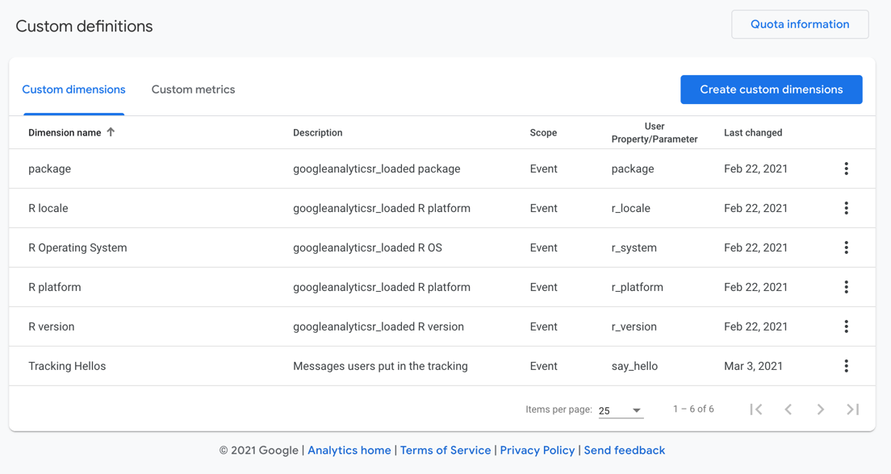

To enable package tracking in your R package you need the following:
.trackme environment within your package. These are public so it is possible for people to use them to send data.
.trackme <- new.env()
.trackme$measurement_id <- "G-1234"
.trackme$api <- "_hS_7VJXXXXXXX"mp_trackme() (or a wrapper function) that will let end-users opt in to tracking.
mp_trackme("yourPackage")Since you know the package name, it is recommended to wrap the functions above with the package filled in e.g. this package uses mp_opt_in() to ask for opt-in for its own stats (meta)
mp_opt_in <- function(){
mp_trackme("measurmentProtocol")
}.onAttach start-up function add: measurementProtocol::mp_trackme_event() which will check for an opt-in file and send a message if it is not present, or if it is present will send the tracking event. Also add in the name of your opt-in function to appear in the startup message:
.onAttach <- function(libname, pkgname){
measurementProtocol::mp_trackme_event(pkgname, opt_in_function = "mp_opt_in")
}You need to add the custom definitions that will be sent in the tracking events. They are shown below:

paste(package, utils::packageVersion(package))
utils::sessionInfo()$locale
utils::sessionInfo()$running
utils::sessionInfo()$running
utils::sessionInfo()$R.version$version.string
measurementProtocol::mp_trackme_event()
googleAnalyticsR uses the above to provide opt-in tracking of what systems its running on.
ga_trackme() is sent on package load if consent is given in the form of a file saved on the user’s computer (much like a website cookie).
You can see what is sent with the debug_call=TRUE flag - the below is sent when this RMarkdown file renders:
ga_trackme_event(debug_call = TRUE, say_hello = "Documentation is a feature")Send your own messages if you like! I will read them in the GA4 interface.